一次敏感信息泄露引发的逻辑漏洞挖掘
根据手头上的信息，最大化的利用，一次简单的漏洞挖掘，感觉过程很有意思分享一下~
0X01初始
收集子域，也是渗透的初始。这里我只是简单用了fofa发现了该公司用来管理合作的一些子域名然后发现是登录管理页面，深入然后发现很多的敏感信息。也是从其中的一处敏感泄露，引发了众多漏洞的挖掘。整个测试其实就花了半个小时不到。不过男人不能说自己快！，其实我花了很长时间呢。还是那句话千里之堤毁于蚁穴呀。
0X02挖掘开始
首先我发现了两处子域，直接上fofa简单粗暴有效
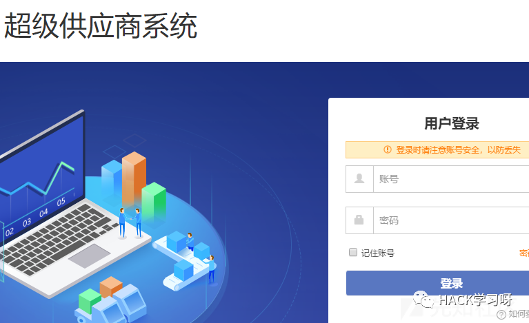
很明显的都是登录系统，而且都是供应商的登录系统。所以这里就引发一个问题，我们没有账号，也不知道账号的命名。所以很多测试都无从下手。它这里一个系统也提供了注册功能，但是需要提供企业的一系列证明，通过审核之后才能拥有账号。
那么要怎么办呢，这里我采用JSFinder工具，首先对两个登录系统，扫了一遍js。看看是否能有一些突破点。于是这一扫也就是整个渗透的开始。
这一扫，我发现了一些敏感信息泄露，泄露了一些管理员的创建时间，和名字，但是都无关轻重
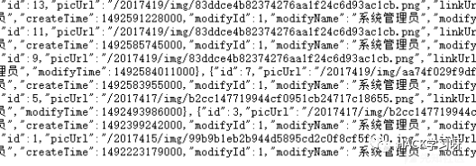但是我发现了这个
xxx.com/超级供应商2.0功能操作手册-V1.0.0.doc
一个操作手册的链接，遂下载下来
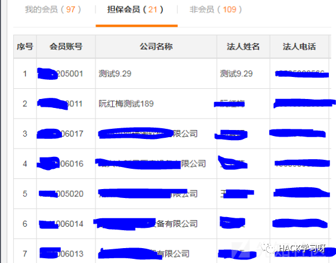
这个文件就是系统的突破口，因为从中我们得到了，系统的账号命名规律，还有一些手机号，
这些信息都是我们之后深入测试的突破口
既然我们得到了账号的命名规律。然后我们发现此系统又是登录次数错误密码过多，才会出现验证码拦截。
于是当然万能弱口令走一波。用密码123456，和账号当做用户，密码去撞，
撞出来很多有效账号
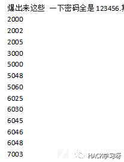
遂登录进去
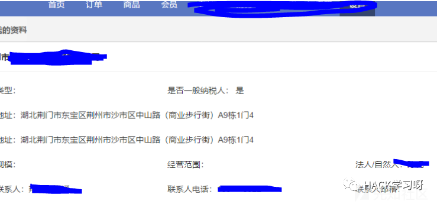尽可能的收集信息
当时我的想法是如果无法有获取到大量数据的漏洞，就从别处下手
主要也是爆出来的账号功能权限大部分受阻，所以还是在后台只找到了一处越权打全站的存储xss。
“><img src=x onerror=alert(1)><”
简单的闭合
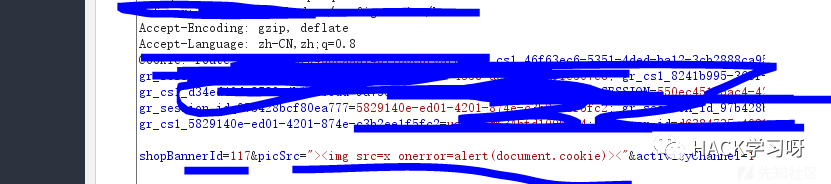前面的shopbannerid 就是可以越权修改的地方
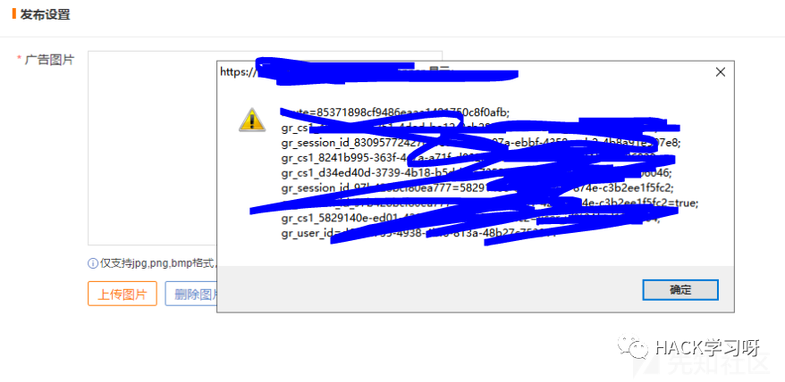
只要用户点击广告设置的地方，即可触发xss
这个后台xss正好我们是可以验证的，因为爆出来很多账号，验证一下发现可行，所以即可越权打全部商户的cookie了
这也是从后台发现的一处可能危害较大的洞。
其实我认为我在后台发现最重要的地方是下面这个功能
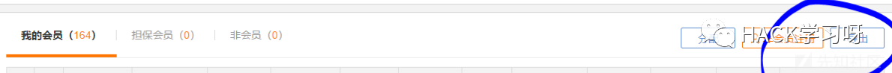
然后我导出发现
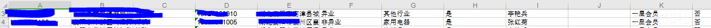
里面存放着大量的商户数据，然后我从中又发现一部分账号的命名规律
这代表我们又可以加以利用啊。
不过这个只是一部分关键因素
因为我们前台的功能还有一处忘记密码啊。
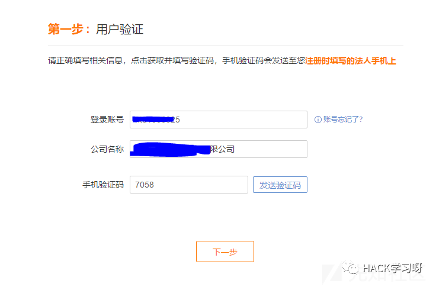
它这里，在我刚开始挖掘的时候就注意到，但是苦于无法知道账号和对应的公司名称，遂先放置
但是通过里面的信息泄露，我发现了命名规律和部分的账号名称
然后通过查看js提示 发现发送的验证码是4位。遂爆破
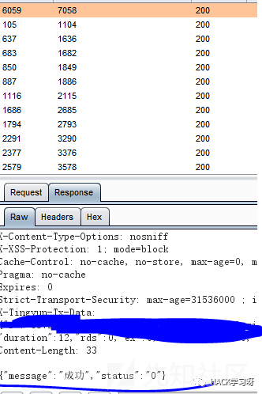
成功可以重置密码
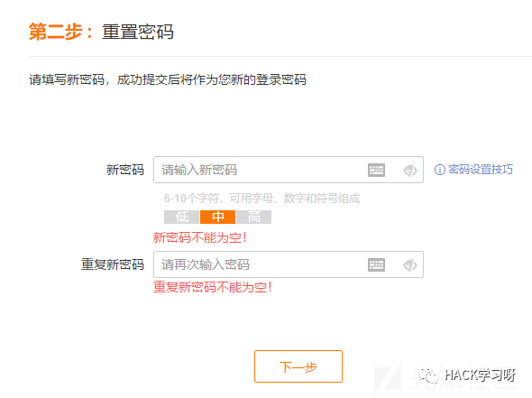
而且我们这里是可以重置全站用户的，为什么这么说呢
因为我发现这一处好玩的功能点
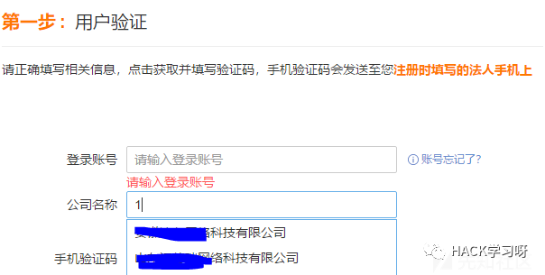
当你输入一些开头的文字，它下面会提取相似的供你选择，综合手头上的信息
我们已经掌握了全部的账号命名规律，然后公司名称那里也提供了
然后我发现这一处，可以固定公司名称，爆破账号，遂爆出对应的账号，即可修改全站的密码
包括管理员的。
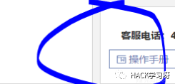
而且上图可以发现，他这个操作手册其实是登录进去提供的功能下载的。
而且当我们重置密码进去之后，里面有一处会员账号导出的功能，利用这一点我们可以不断的导出账号，发现它全部的账号命名规律
这样就可以最大话的，进行攻击。
说完这个平台，该到另一个平台了
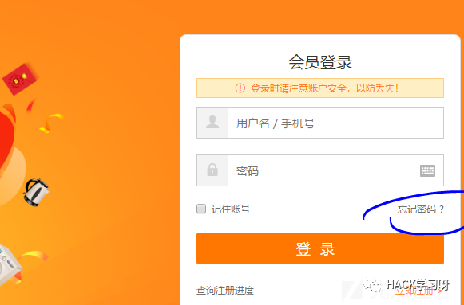
它这一处系统同样是商户系统，是用来给商户进行采购的
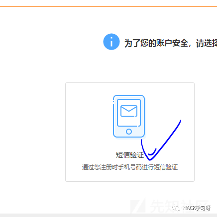
进行忘记密码功能
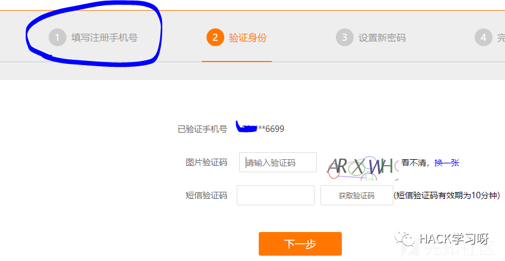
这里我直接跳入到了第二步，第一处要输入商户手机号。
返回上文，在我们导出的大批的商户数据，不就是含括手机号嘛
于是乎，我直接拿来一个进行测试
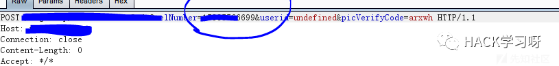这里输入验证码抓包，将手机号换成自己的
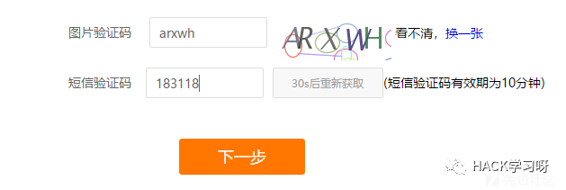
输入手机验证码抓包
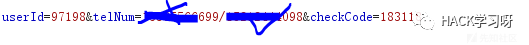
将手机号换成我的
然后成功到密码重置界面
它这里应该只是看userid，在它发送验证码我手机收到验证码的时候，我们其实就会感觉到异常，因为它这里发送验证码是没有去和商户的手机号进行查询对比，是否存在发的
而且它最后一步，还带上了userid的值，所以我就可以通过替换手机号，还重置所有的商户密码
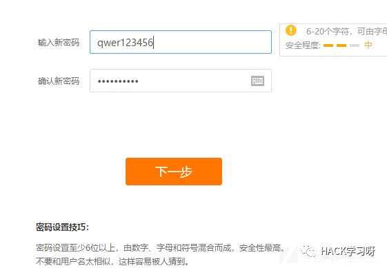
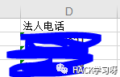
再给各位观众老爷看一下，这是从上一个表格拿到的手机号。结合起来
到这里我就没有去测试了，因为我觉得我能修改你两个商户系统的所有用户密码，已经是很高的危害了。
而且需要修改密码才能进去继续测试，作为正义的白帽子应该点到为止~所以就到此结束啦
0X03总结
让我们来顺一下。一切罪恶的源头都要从，那一处由js泄露的敏感文件开始。从那里我们得知了账号命名规则。然后通过规则爆出出大量的弱口令，从而进去后台。又从后台发现大量的会员商户的账号和对应的手机号和对应的商户名称，这样我们才能继续测试忘记密码处的功能，然后我又通过这个手机号发现，我可以在另一个商户系统中使用。从而形成一个重置两个系统的商户密码的攻击链。
这一切还是由于一处未授权下载文件引起的啊。千里之堤毁于蚁穴
如何根据手头上的信息最大化攻击，emmm感觉才算是漏洞挖掘的有意思之处叭

参考来源：先知社区
作者：任意门